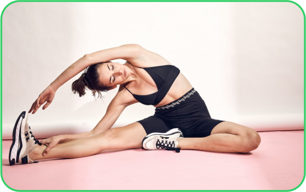

<section class="important">
  <div class="container">
    <div class="important_inner">
      <h2 class="h2">WHY <span class="green">FITNES</span> IS IMPORTANT ?</h2>
      <div class="important_content">
        <div class="important_img">
          
        </div>
        <div class="important_text">
          Being physically active can improve your brain health, help manage weight, reduce the risk of disease,
          strengthen bones and muscles, and improve your ability to do everyday activities. Adults who sit less and do
          any amount of moderate-to-vigorous physical activity gain some health benefits.
        </div>
      </div>
    </div>
  </div>
</section>
